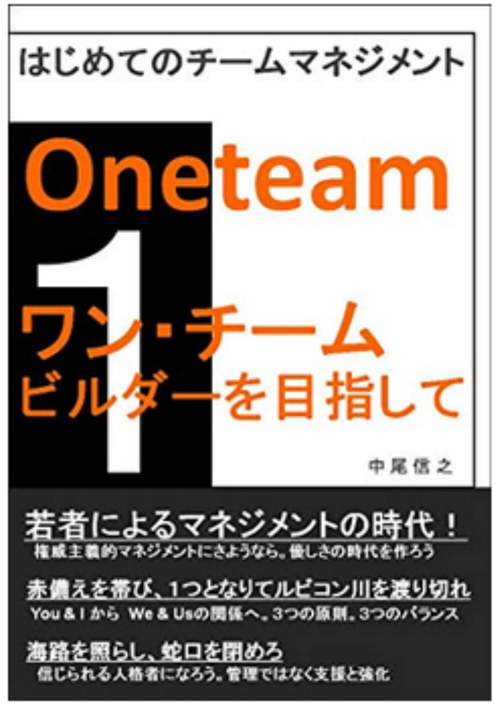

| あなたの世界を変える読書９ あなたの世界を変える１０冊の名著 あなたの世界を変える読書 あなたの世界を変える１０冊の名著 | |
| 中尾信之 | |
| (2018) | |
あなたの世界を変える読書９
あなたの世界を変える１０冊の名著
□はじめに
・大木を支えるもの
□第一章 生き方のヒントをくれる本
１．拝金 青春経済小説 堀江貴文
２．無人島買ってみる？ 佐藤ノブ
３．太平洋のレアアース泥が日本を救う 加藤泰浩
４．大前研一ビジネスジャーナル Ｎ Ｏ. １６
（人材戦略は「軽く・薄く・少なく」
～２０世紀の人材観が会社を滅ぼす～） 大前研一
□第二章 世界のとらえ方を変える本
５．脳の履歴書 苫米地英人
６．韓国と北朝鮮は何を狙っているのか
核ミサイル危機から南北連合国家へのシナリオ 呉善花
７．現代洗脳のカラクリ 苫米地英人
□第三章 科学によって見方を変える本
８．血液の闇 船瀬俊介 内海聡
９．老けたくなければファーストフードを食べるな
老化物質ＡＧＥの正体 山岸 昌一
１０．１００歳まで元気でぽっくり逝ける眠り方 大谷憲
□おわりに
・不安定存在を超えて、
あなたの世界を変える読書９
あなたの世界を変える１０冊の名著
□はじめに
・大木を支えるもの
本シリーズも、今回で９回目を数える。本シリーズは、キンドル読み放題書籍の中から、私が面白いと思った本を紹介させて頂いているシリーズである。
あと１回でシリーズも１０回目となり、合計１００冊の本を紹介してきたことになる。大木の根が、土の中を網の目のように張り巡らされるように、私たちの脳内では、今まで読んできた本の中の知識とあなた自身の経験がゲシュタルトとして、ネットワークを構築していっているに違いない。そうして、このゲシュタルトが十分であれば、外界から何か情報が入った際に、この知識のネットワークは、いろいろなルートで情報を伝達しあい、即座にレスポンスを導きだしてくれるのである。
木は大きく育てば育つほど、多くの栄養を必要とする。そのため、根も広く張り巡らせる。私たちは、自分の考えた大いなる可能世界を現実にしていくために、また、自分の思うことを成し遂げるために、木々たちと同じように、目に見える枝葉だけではなく、地中の根を広げるがごとく、脳内のネットワークを広げ、活性化させていく必要があるのである。
それらの思考ネットワークの基礎がしっかりとしていないと、弱った木が台風によって倒れるように、もろくも物理世界の現実に負けてしまうことになりかねない。しかし、私たちが、しっかりとした知的ネットワークを脳内に構築していれば、いろいろな物事に簡単には負けずに、いつも柔軟な生き方を模索して、実行していけるはずである。
かくいう私も、数か月のプロジェクトが終わり、現在は、無位無官の草の民である。確か、２９歳の時に、恩田陸さんの「常野物語」という本を最初に読んだ時は、非常に衝撃を受けたのを覚えている。
「常に野」にあれ、在野にあれということである。在野ということや、無位無官とういうことだけではなく、民間も含めて、どこにも所属していないということは、さらに不安なことかもしれない。しかし、それは、自由であることも、また事実である。私はまた、この機会にしっかりとした知識の根を広げていくことと、新しいことに集中的に取り組むつもりである。
読書によってあなたの世界観がつくられ、
あなたの認識する世界は変えられる。
認識世界が変われば、あなたが変えられる。
そして、豊かな世界を生きられるようになるのである。
私が、本シリーズで紹介した時点では、読み放題対象だった書籍が、その後、読み放題ではなくなっているものも出てきていますが、その点はご容赦を頂きたく思っています。そのような書籍については、私の推薦文を読むことで要点部分をご理解頂くか、興味を持たれた場合は、ご購入頂くか、その作者の他の読み放題書籍を手にとって頂ければと考えています。その点、ご了承頂きたく、よろしくお願いいたします。
□第一章 生き方のヒントをくれる本
１．拝金 青春経済小説 堀江貴文
本シリーズでは基本的にノンフィクションの作品を取り上げることにしていたが、前回、フィクションである苫米地英人さんの作品、「洗脳学園」を紹介した。なぜならば、フィクションでありながら、いろいろな現実の洗脳に関する現実の要素が盛り込まれ、フィクションとも言い切れない臨場感があったからである。
今回、最初に紹介する「拝金 青春経済小説」は、フィクションの形式をとっており、堀江さん自身が主人公にはなっていない。しかしながら、主人公の「藤田優作」がたどる成功と、転落、そして、それでもめげない姿は、堀江さんの一連の騒動と、ほぼ一致している。また、あとがきで堀江さんは、多くの事実を盛り込んだことを告白されている。よって、本書も苫米地さんの「洗脳学園」と同じで、完全なノンフィクション作品というより、事実のエッセンスを多分に含んだ作品であると言えると思われる。法律的な問題もあり、直接に記載できないことを少しぼかしているだけで、本質は、リアルな作品と感じたため、ここで取り上げることにしたのである。
物語の主人公は、「藤田優作」という青年である。彼をフリーターから上場企業の社長に導き、そして球団買収騒動や、テレビ局買収騒動へと誘導していく人物として、「堀井健史」なる登場人物が設定されている。
主人公の藤田の軌跡は、堀江さんの活動そのものであるように思われるが、堀江さんにも、物語のように指南役がいたかどうかは不明である。しかし、この物語で指摘されているように、球団経営という大企業の連結会計で、経費で落とせる美味しいビジネスが一部の企業の既得権とされており、球団や本体の経営が赤字でも容易には他社に引き継がれないことなどの指摘は、事実であろう。
また、同様に、本来は国が電波オークションなどの公平なプロセスを経て、電波の利用者を決定すべきであるのに、そのようなプロセスを経ずに、オークションがなされれば数兆円支払うべき公共の電波利用料について、テレビ局各社は全社合計でも７０億円程度しか支払っていないことなどの指摘も、事実であろう。
数兆円の利益供与を、国民の許可なく、テレビ局各社が受けておきながら、７０億円程度しか支払っていないという不均衡があれば、テレビ局は、国民の知る権利や、民主主義を守るためではなく、他の利権を保護する方向にしか動かないという指摘は、まったく論理的である。
本書の中で、球団経営に関するごたごたは、結局、藤田が業界に波紋をなげかけ、別の企業２つが球団経営に加われることになったことになっている。これも、企業名は少しもじっているが、実際のソフトバンクと、楽天と容易に推測できる社名と社長名が書かれている。このあたりは、ほぼ事実が書かれていると思われる。そして、一連の騒動のあとの、マスコミの主人公の藤田に対する偏向的な報道と、検察による他事例よりも厳しい取り締まりは、報道や司法の公平性を欠いている事例としても参考になる。
本書は、拝金という題名がついているが、お金至上主義に対して疑問を呈している書籍であると思われる。退職を迎えた人間が目標を見失い無気力になるように、大金を手にした人間も、たいていが無気力になるという。
ところが、堀江さんは大金を手にしても、社会的に制裁をうけても、刑務所に服役しても、なお、自分のやりたいことを追い求め続けているのである。社会が拝金洗脳になっているとしても、その社会の中で、自分のやりたいことを追求する人間の姿勢を本書では見ることができると思われる。
なお、本書の後に、書かれた本として「成金」という本がある。堀江さんの小説二作目である。時間軸では、拝金の前の時間を描いている作品である。
２．無人島買ってみる？ 佐藤ノブ
本シリーズの第三弾では、川村俊一さんという昆虫の標本を販売している方の本を紹介した。昆虫を採集しに未開の地にでかけたり、昆虫の標本を作製したり、また虫好きの展示会でのやり取りなど、その道の人にしか分からないことに没頭している方の魅力を紹介した。今回は、無人島を販売しているという、これまた珍しい方の本を紹介したい。
この本は、表紙から見ても、文章の書き方をみても、プロの編集者が編集をしていない本のように見受けられるが、内容は非常に面白い作品であった。私は、無人島という言葉を意識したのは、ムツゴロウさんこと畑正憲さんの本を読んだ時である。
ムツゴロウさんは、学研を辞めて、独自に動物の研究を始めた際、ヒグマを育てる場所として北海道の無人島を選んだのである。外界から隔離されているから、クマヤや犬を自由に育てることができる。しかし外界から隔離されているがゆえの生活の不便さがある。ムツゴロウさんの場合は、対岸にムツゴロウさんの弟夫婦が暮らして手助けをしてくれていなかったら、大変なことになっていただろうという。やはり、無人島というのは、過酷な状況の島が多いのである。
だからこそ、本書では、無人島を何の目的で必要としているのかを明確にすべきであるとしている。住むということを目的にするのであれば、住居が必要になり、水道、下水道、電気の手当てが必要になる。そして、島までの移動手段の確保も必要となる。水や食料は運ぶにして、電力も発電するとしても、意外にきちんと考える必要があるのが汚水の処理であるという。それらの問題から、住むことを前提にすると、住める島というのは非常に限られてくるため、無人島売買という市場は広くならないのだという。
また、市場価格というのも、バブルの存在でゆがめられている面もあるのか、何も生み出していない土地でも持ち主がなかなか、値段を下げないという実情もあるようである。しかし、手を加えなければ利用できない島の値段を下げないのであれば売りにださずに、自分で活用するのが良いように思われる。そもそも、土地は一番初めに誰のものというふうに決めるようになったのか、いつも不思議に思う。また、日本で登記は法的に強制されていないことから、この不明確さも問題である。だからこそ、四国と同等規模の持ち主が分からない土地があり、それが北海道の広さにまで広がると言われている。
それでも、筆者の行動力は素晴らしく、無人島の販売をしている師匠と仕事ができるようになるために、何度も連絡をして、ドイツに赴き、肩透かしをそこで食らっても、カナダに会いに行きというふうに、熱意と行動の人である。
島販売を始めてからも、それ一本では成り立たず、別に仕事も掛け持ちしながらという頑張りようである。そして、マーケットに出ていない島を、地図で探して、地元の役場に問い合わせて探したり、海外の島の場合は、提携先を共に探したり、市場に出ているものを紹介して、契約の支援をしたりというサービスをしてくれるようである。経費倒れのことも多いと言いながら、やはり没頭する楽しさが伝わってくる一冊である。
無人島を売るという生き方、無人島に買うという生き方、そのどちらにも夢があることを感じることができた。売る側にしても、買う側としても無人島を探すことを楽しみや、無人島の活用方法をいろいろと考え、そして、あれこれ夢見る楽しさがある。何も無人島まで行かなくても、人口が少ない島で暮らすという選択肢は、これから、ますます魅力となるかもしれない。
いずれは土に帰る人間は、今を楽しみ、やりたいことを、やるのが一番。
夢だけでは生きていけないかもしれないけれど、夢がなくては生きる意味がないという筆者の指摘は、筆者の哲学であり、今まで紹介してきた方々の考えと共通する部分があるように感じた。
３．太平洋のレアアース泥が日本を救う 加藤泰浩
日本の国土は世界で６０位前後の広さであるが、領海と排他的経済水域を含めた日本の権利が及ぶ海の広さは世界で６位と言われている。参考までに、一位から順にあげると、アメリカ、オーストラリア、インドネシア、ニュージーランド、カナダ、日本となる。また、２００８年に国連大陸棚限界委員会に申請を行い、そのうちの一部が認められて、３１万平方キロメートルの拡大が認められたという。まず最初に、日本は、これだけ広い海を保有している国であることを理解する必要がある。
さて、私たちはレアメタルという言葉になじんでいるが、レアメタルという言葉は日本で作られた造語で、国際的には通じない単語であるという。正確には日本でレアメタルと呼んでいるものの中で、特に重要度の高いものが、レアアースとして注目されているものであるという。そして、このレアアースはハイテク機器や、電気自動車、ＬＥＤや携帯電話など、多くの電気部品に使われている。また７％は軍事部品に利用され、宇宙航空分野にとっても重要な資源となる。
このレアアースは、これまで、中国が圧倒的に安値で供給してきたことが指摘されている。安値攻勢で、他国の鉱山を閉鎖に追い込んでいたというのである。ところが、近年、中国は輸出規制をして、価格を上げるなど、不安定要素が高いことから、中国に依存しない供給体制を作る必要があるとのことである。中国自体も、筆者の指摘のように、戦略として意図的に生産を不安定にしている面があるのかもしれないが、レアアースに限らず、あらゆる製造現場についても、環境に配慮した政策も取りつつあるため、以前のように乱暴にレアアースを抽出することを許さない側面もあるのだという。
世界的にみて、海底資源としては、油田の開発は進んでいるものの、鉱物資源の開発は進んでいない。しかし、レアアースについての調査は断片的になされたものがあり、過去の研究で収集された泥を分析することで、海洋におけるエアアースの分布と埋蔵量を推測できつつあり、筆者の研究チームが心血を注いで研究し、２０１１年にネイチャー・ジオサイエンスで論文が取り上げられるなど、今後の開発が期待されている。
筆者の試算では、陸上の８００倍の埋蔵量があるという。もっとも、有望なのは、ハワイやタヒチであり、アメリカやフランスの排他的経済水域になるという。
この予想される膨大な埋蔵量以外のメリットとしては、海底のレアアース層には、希少な重レアアースの含有量が多いこと。陸のレアアースと異なり、トリウム、ウランなどの放射性元素を含まず環境を汚染しないこと。埋蔵地域の探査がしやすいこと。泥から抽出がしやすいことなどがあげられている。
ではどのようにして、レアアースの泥が形成されるかというと、中央海嶺などの熱水活動で、海中に鉄やマンガンが放出され、これらの鉄質懸濁物質が海中に溶け込んでいるレアアースを吸着していくのだという。それが沈殿したものがレアアースの泥の層である。筆者は、日本の水域では南鳥島のレアアースが有望だとして、日本の利用料の１０％をまかない、実際に資金的にも回収が可能だとしている。しかし、日本の役所の対応の悪さについては苦言をていしている。その悔しさと、筆者の熱意が、ひしひしと伝わってくる作品である。
レアアースを新規に採掘しなくても、代替技術を開発する、利用する量を減らす、リサイクルするなどの方法はあるようであるが、ここまで現実的にレアアース泥の調査が進んでいるのであれば、筆者の思いや行動は、現状以上に民間企業を動かし、開発が進んでいくのではないかと期待できる。
４．大前研一ビジネスジャーナル Ｎ Ｏ. １６
（人材戦略は「軽く・薄く・少なく」
～２０世紀の人材観が会社を滅ぼす～） 大前研一
２１世紀は傑出した個人をどれだけ集められるかが組織成長の鍵であるため、組織や技術、資本より人が最も重要なファクターであると大前さんはいう。このことは多くの人が認めていることに違いない。しかし、意外に人事に関する考え方は、抽象的で一般化されておらず、同じ会社の中でも、経営層から末端に至るまで、忙しさにかまけて、共通認識として、明確な考え方が共有されていることが少ないのではないだろうか。
組織成長にとって、非常に重要な人事に対して、トップは２割以上の時間を人事にさかなければいけないということを、大前さんは、何十年も前から指摘し続けている。しかし、そのように人事のことを大切に考えている経営者は少ない。 そもそも、どんな人を採用したら良いかを考える前に、どんな会社にしたいかを明確にしていなければならないと大前さんは指摘する。
会社が何をコアにしたサービスを提供するかということである。その考えなしに、良さそうな人を集めても、船の進むべき方向が明確でないと、組織はまとまった力を発揮できないのである。
新卒一括採用と自前主義では、産業の突然死や、シンギュラリティ（技術的特異点）などと言われる環境変化に対応できないことも指摘されている。そもそも、欧米はジョブがあって人を採用するが、日本は組織の人数にあわせて人を採用し、ジョブとの連携が薄い場合が多いという状況が、今も続いている。ジョブ・ディスクリプション（職務の定義書）が薄いということである。仮にジョブ・ディスクリプションがあっても、現状のジョブと、理想のジョブと、どの項目が最低限必要な項目で、どれが理想の項目かという分類もきちんとしておくべきだというのが私の考えである。
そもそも、まともな人事ファイルがある企業が少ないという指摘も面白い。これはどういうことかというと、会社が社員を希少な資源としては考えておらず、コモディティとして扱っているということであるという。
ＨＲテックのツールができても、使える中身（情報）を入れる文化がないと、データベースの箱がからっぽのままであり、使えるデータが蓄積なされない状態となる。中身があっても、ゴミ情報ばかりでは意味をなさない。データベースに入力する内容はディスクリプティブ （ descriptiv e ）記述的で説明的である必要があるということである。
どのようなプロジェクトで、どのような役回りで、どのような価値を出したのかというようなことを入力しておく必要がある。そのような実際の次の配置に役立つような情報がなければ、抜擢人事などに役に立たない、断片的な情報しか残っていないということになる。だからこそ、好きとか嫌いとか、実力と関係のない登用がなされてしまうのである。
大前さんは、別の書籍でも指摘していたが、サイバーエージェントの新卒が社長になれる制度で、すでに４０人以上の新卒社長が誕生しているという。このような思い切った制度こそ、急激な環境変化に対応する試みであると思われる。会社が制度として、イントレプレナーを育てることを試み、経営を若いうちから経験できるチャンスを与えるということである。
エクセレントカンパニーなだけでは面白みがなく人が集まらないということがＧＥを例にとり紹介されている。いまやＧＥですら、そういう状態であるという。ＧＥの現在のコアは、重電機、メディカルエレクトロニクス（医療機器）、ジェットエンジンの３つのみで、金融と保険は、切り捨てているようである。この２事業については、ジャック・ウェルチ時代のつけが回ったとされている。２０年前は、あれだけ、彼のリーダーシップが、もてはやされていたが、今となっては、もう古い事例として紹介されているのだから、環境変化の速さを思わせる。
柔軟な労働市場、手厚いセイフティネット、積極的な雇用政策の３点セットがデンマークなどの労働市場改革であるとされ、安倍自民党の政策は、労働の固定化をすることであると指摘がされている。実際、３つのバランを取るどころか、ひとつも対応できていないのではないだろうか。
それでは、税金は何のために集められているのだろうか。雇用保険は何のために徴収されているのだろうか。ＡＩが進歩するまでもなく、現在の技術で、とっくに不要にできるのは、失業保険制度や、経済産業省などの補助金の申請と、給付の運用にかかわっている公務員なのである。オンラインで処理されるべき仕事を紙ベースで、人の目で対応している彼らこそ、職業訓練を受けるべき人種である。
個々人としての能力の磨き方、生活の質の上げ方の問題と、会社組織としての人事制度の在り方、そして社会全体としての制度の在り方、この三つに繋がりのある考え方が必要であると思われる。そのひとつの考え方が、柔軟な労働市場、手厚いセイフティネット、積極的な雇用政策ということなのであろう。答えは一つでないにしても、個人、会社、社会にとって、一貫性のある制度を設計する必要があると言えそうである。
□第二章 世界のとらえ方を変える本
５．脳の履歴書 苫米地英人
本書は、このシリーズで毎回取り上げている苫米地さんの自伝のような作品である。以前、紹介した「２０１冊目で私が一番伝えたかったこと」と同じく、苫米地さんの書籍の入門書としても、また既に苫米地さんの書籍を複数読んだ方々にも楽しめる書籍である。
本書でも、前回紹介したロスチャイルド家のことが記載されている。日本の江戸から明治にいたる過程に起こった戊辰戦争は、「イギリスのロスチャイルド家と、フランスのロスチャイルド家の家族ゲンカの代理戦争だったとも言える」との指摘がなされている。そしてロックフェラーやロスチャイルドの善意で世界は征服されており、彼らの思考する世界政府、世界警察の論理は、必ず破綻すると指摘する。
また苫米地さんが脱洗脳でかかわったオウム事件については、「そもそもオウムは各国の諜報機関がたっぷり入り込んだ、データ収集のための実験室だったのだ」との指摘もされている。どういうことかというと、オウムが行っていた、いろいろな行為を、各国がどこまで支援や協力をしていたかは別として、オウムで行われた情報を、各国はいろいろな手段で取得している可能性が高いということである。私は他ではこのような情報を聞いたことがない。このような情報が聞けるのが、苫米地さんの本の特徴である。
そして、苫米地さん独特の指摘は、信用創造を行い金融業が圧倒的有利なこの金融資本主義経済をやめるべきだという指摘である。スピリチュアリズムや、カルト宗教が不要なように、お金教である資本主義が不要というのが苫米地さんの主張でもある。３０年前から世界は全人類のための食料を確保できているにも関わらず、投機で食料の値段があがるなど、確かに現在の経済は、制度としてバグがあると言えそうである。
６．韓国と北朝鮮は何を狙っているのか
核ミサイル危機から南北連合国家へのシナリオ 呉善花
韓国は日本にとって非常に距離的にも心情的にも近い国である。私には何が良いのか分からないが、韓国の若い男性グループや女性グループの音楽が日本ではやったり、韓流ドラマがもてはやされたりしている。
個人的には、約２０年前にオーストラリアに観光ビザで一度訪問してから、ワーキングホリデービザとスチューデントビザで再度訪問している間に、韓国の若い人たちと自分たちとの近しい感覚を知ることができたし、また職場でも韓国系の方々とご一緒することが多かった。国ということを離れて、個々人という点では、非常に親近感を持っている。彼らが言うには、私が韓国人の方々に親しみを持たれる顔をしているようである。このように、近しい隣国であるにも関わらず、韓国の政治については、私たち日本人はあまり知識を持っていない。
本書は、そのような知識が足りていない我々が、お隣の国韓国と北朝鮮について、最低限の知識を得るための書籍であると言えるとともに、ここで読んだ内容から、いろいろと思考実験をできる素材としての価値のある書籍であると思われる。
韓国の政治家は、北朝鮮に太陽政策を続けているのは、北朝鮮と平和裏に政治的統合を果たして民族として一緒になり、日米と、中ロの間における重要な調整を果たせる強い国家になりたいと考えているからだという。
また、北朝鮮が、非常に独裁色が強いながらも、軍事的にも国家として一体感があることに、韓国の市民はともかく、政治家は非常に羨ましいと思っているというような指摘がある。これは、韓国の若者の方々の感覚とは離れているのではないかと思われるが、韓国ではなくても、日本の政治家も、そのように国家主義的な考え方の政治家は、ある意味、独裁政権を見て羨ましく思うことがあるのかもしれない。
アメリカは、北朝鮮の政治体制を事実上容認しており、時期はともかくとして、韓国から米軍を撤退させる時が来た際には、米軍の撤退イコール、国連軍の朝鮮半島での活動がなくなり、韓国と北朝鮮の、より一層の緊密化に障害がなくなることになる。ところが、経済的に一気に統一となると、韓国の負担が多いことから、当面は両国の政治体制、経済体制を維持するという少しいびつな形となりそうであるが、それが現実的なように、私にも思われる。
韓国は太陽政策で累積１兆円規模の援助をしており、その金額分が、北朝鮮の兵器開発に流れているという。このことは、韓国が無駄金を使ったという見方もできるが、韓国自身も核開発に興味を持っているのであるから、両国が一緒になった際には、両国のための核兵器ということになり、あながち援助は無駄であったとは言えないのかもしれない。筆者は、北朝鮮が、どのような形であれ、核放棄をするつもりがないということを指摘して、この北朝鮮の考えが、あらゆることの障害であることを指摘している。
北朝鮮の核は、他国から自国を防衛するためということだけでもなく、経済援助のカードというだけでもなく、自分たちの尊厳のために必要だと思っているのだから、核放棄をさせるには、どのような交渉も意味をなさないというのである。 それは確かにそのとおりかもしれない。そもそも、現在の大国や、一部の核保有国は、既成事実だから核を保有しても良いが、その他の国は持つべきではないという枠組み自体が大人の論理ではなく、子供の喧嘩の論理であるようと、私は中学生のころから考えてきた。
要は、「持ったもん勝ち」の論理である。
本書の中でも、インド、パキスタンの核保有が事実上、承認されているということが記載されている。両国の核が事実上認められ、なぜ北朝鮮の核は認められないのか。北朝鮮ではなく、韓国と一緒になった国家の場合は、認められるのかなど、論理的に破綻しているのが、現在の核拡散防止のルールである。小国が持つ核は不安定で、大国が持つ核は安定核であると言われる。本当だろか。第二次世界大戦後も、世界で戦争を続けてきたアメリカの核が一番危険なのではないだろうか。世界で植民地支配をし続けてきた大国の核も危険なのではないだろうか。
抑止力として、北朝鮮はソウルに大規模な打撃を与えられるミサイルを向けているから、それで十分な抑止力を備えており、核を持つことは過剰防衛であると筆者は指摘する。それであるならば、十分な通常兵器を持つ、大国が持っている核は全て、過剰防衛の兵器である。まったく核を減らさなかったオバマ大統領はノーベル平和賞と賞金を返却すべきなのである。
本書では、可能性が記載されていないが、インドと、パキスタンの核が事実上認められたように、米軍が撤退する可能性が、かなりあるということは、朝鮮半島の核も事実上承認されるという可能性があるのではないかと私は考える。
良く考える必要があるのは、アメリカが韓国に軍隊を置いていようが、軍事訓練で、いろいろな圧力をかけようが、北朝鮮は核を開発できたのである。アメリカが果たせた役割は、せいぜい実際に戦闘が再開されなかったということだけであり、韓国に軍隊をおいていた意味は、ほとんどなかったのではないだろうか。だからこそ、アメリカはどんどんと韓国にある米軍の柔軟性を高め、撤退へと向かっているのだろう。
同じように、日本にアメリカが軍隊をおいていようが、これも北朝鮮のミサイル発射を阻止する抑止には、まったく役に立っていなかったとも言える。それにも拘わらず、米軍への思いやり予算は、平成３０年まで５年連続増加傾向にあった。
彼らは日本のためではなく、アメリカの国益（アメリカの市民のためではない）のために駐留しているだけで、北朝鮮の核開発も、ロケット発射も、日本近海の島々の問題にも何の影響も与えていないので、逆に、領空利用料、土地の利用料、その他迷惑料を日本に支払うべきなのである。
ところが、実際は、日本は独立ができていないから、いまだに賠償金のように思いやり予算を支払わされているのである。そろそろ、出て行ってもらい、沖縄を本当の住みよい島、そして世界の観光リゾートにさせてもらいたいと思う。
７．現代洗脳のカラクリ 苫米地英人
今回も苫米地さんの本を２冊紹介させて頂くことにした。以前も記したが、苫米地さんの本は多くの本が読み放題対象となっているからであり、また専門的な内容も分かりやすく記載されているからである。また、他の作者の本とあわせて読むことのシナジー効果の起点になると思われるからである。
本書も以前に紹介した洗脳護身術のように、洗脳について知ることで、洗脳を防ぐという趣旨で書かれている本である。一般的な洗脳という行為が、何か特別な行為ではなく、日常的に私たちの生活の中で、テレビ放送や、社会で生活するなかで、洗脳される危険性があるというのである。また、実際に苫米地さんが、かかわった２名のオウム真理教信者二名のインタビューも含めて、洗脳という行為が、どれだけ自然に刷り込まれる行為であるかということも紹介されている。
本書を最初に読んで面白いと思った点は、高学歴者ほど、洗脳を受けやすいということである。勉強をしている際に、自分で集中力を高めて暗記作業を効率的に行うなどが得意である彼らは、変性意識状態になりやすいという。これは、一度、催眠術や洗脳を受けた人が、次からは、さらに受けやすいというような状態になりやすいのと同じであるという。そのことを踏まえれば、高学歴者がオウムに心酔したことも合点がいくと同時に、画一的なエリート官僚が行政を仕切っていることも危うい状態だという指摘がなされている。
がん保険のテレビの宣伝についても、お金が第一だという刷り込みの内容であるという指摘がされているが、最近のテレビＣＭは保険や、ローンや、消費者金融など、金融商品系のものが非常に多い。それらはお金第一主義の刷り込みを毎日行っているのである。私は保険が大嫌いなので、海外旅行に行く際の保険と、自動車に乗る際の保険にしか入らない。高齢者でも入れる保険、大病をした方でも入れる保険という宣伝があるが、これはリスクが高い人でも入れるということで、その分、保険料があがるということでしかない。
２０年前、大前研一さんの本でも指摘されていたが、何かのために貯蓄をするといって、退職直後より、死んだ後の方が、貯蓄が増えているという日本の高齢者の貯蓄行動の不合理さ取り上げられていた。それから年金の支払年齢が遅くなったり、支払額が減ったりということはあるだろうが、何かのための貯蓄という思考は続いていると思われる。同じように、保険のＣＭで、入院費用だけではなく給与まで補償しますといううたい文句のＣＭもあるが、これも、それだけ支払いリスクが高まるため、月々の掛け金が高くなるだけである。お金洗脳というのは、本当に際限がないので、注意が必要である。
苫米地さんが以前から、指摘しているのは、オリンピックという集金シンジケートの問題である。国際オリンピック委員会は、王侯貴族が名誉職に名をつらね、日本オリンピック委員会も竹田家の当主など旧皇族が名を連ねる。スポーツは美しいという刷り込みを、お金第一主義を隠しながら、宣伝しているのがオリンピックである。皇族が名前を置くのは、日本赤十字の問題と同じであると思われる。
他の世界大会とは特別という刷り込みをあらゆる媒体を通じてしているのである。そして、もともとオリンピックは、儲からないイベントだったのが、ロサンゼルスオリンピックでは、放映権料を引き上げるなどで４００億円の収益を上げたという。ここからオリンピック商法が加速していく。ところが、上手くやれば、このように収益があがるオリンピックを、日本は２兆円も税金を投入して実施しようとしているのである。このようなバカげた話はない。自民党員と、日本オリンピック委員会の方々で、その費用を支払ってほしい。おもてなしといって、電通を通して２億円の贈賄までして誘致した方々がその費用負担をすべきである。そして、来年の大河ドラマはオリンピックにまつわる話だという。薩長礼讃、明治維新礼讃の大河ドラマの次は、オリンピックだとうのだから、ＮＨＫも報道の公平性がないことを証明している。
また、本書はトランプ政権発足後に書かれているため、その選挙について、またその後の動向についての解説もなされている。
貧しい大多数の国民を代表して、ヒラリー・クリントンに勝利したトランプが、当選後は、ウォール街寄りの姿勢をあらわにし、財務長官、国家経済会議議長、首席戦略担当の３名をゴールドマンサックスから、国務長官をエクソンモービルから迎えている。結局、上記の役職の全てをロックフェラーの系列から迎えているという指摘がなされている。ウォール街寄りのヒラリーが、マスメディアを総動員して負けたというのに、それよりも、トランプはウォール街寄りであったということである。
表面的には、人口の７割の白人の権利を優先するようにみせて活動していたにも関わらず、その実は、ロックフェラー系の意向を無視できるアメリカ大統領はいないということである。
□第三章 科学によって見方を変える本
８．血液の闇 船瀬俊介 内海聡
船瀬、内海両氏の書籍は、過去もこのシリーズで紹介をさせて頂いているが、今回の書籍は、このふたりの共著の形をとっている。そして、輸血に関する問題に真っ向からメスをいれている。両氏の医療に関する指摘は大変に鋭く、そして論理的で分かりやすいことから、本当に自分の健康や家族の健康を考える人には、ぜひ一度、本書を読んで頂き、真剣に考えて頂けたらと思う。
本書では輸血の危険性が、かなり丁寧に指摘されている。しかし、そもそも危険であるかどうかという前に、輸血がほとんどのケースで不要であるというのだから驚きである。その根拠は、日本赤十字社のサイトによると一回の献血の量は、全血献血では２００ミリリットルや、４００ミリリットル、成分献血では６００ミリリットル以下とされているが、日本が献血ではなく売血の時代には、多い人は１．５リットルや２リットルも血を抜いている人がいたというのである。個人差もあるが、これは日本以外の国でもそのような数字の例があり、現在も規制が緩い発展途上国の売血のエリアでは、貧しい人は多くの血を売っているということである。
そして、それだけ献血しても、人間は水分さえとっていれば、必要な成分をすぐに回復する力があるということである。ということは、個人差があるとはいえ上述したような量の出血程度であれば、 他人の血の輸血は不要で、必要な「電解質液」を点滴すれば、それで十分ということである 。
このことは人間だけに限られず、何十年も前にフランスで公開実験された「カントンの犬」という実験で明らかにされていたという。この実験では、犬の血液を抜いて代わりに海水を注入するという実験であり、実験直後は体温が下がるなどの影響があるが、逆に体の汚れた血を抜いて、新しくすることで、数日後からは、以前より活発になったというのである。
同じように献血をしている人も、献血後は安静にするように言われても、大量に血を抜いた人が自転車で帰っていったりすることがあるように、血が減ること自体は、一定量までは問題がないようである。私も女性が生理で血を放出していることが、男性より長生きのひとつの要因ではないかと、昔から考えてきた。
さて、ここからは輸血の恐ろしさについての記述について要点だけ触れさせて頂くので、興味を持たれた方は、ぜひ原本を読んで頂きたい。
・血液は一人ひとり異なるために拒否反応がおこり、家族の場合はより強い拒否反応がある。これは臓器移植と同じであり、血液も臓器移植の一種でると言える。血と血の争いが体内で起こるというのである。
・何千、何万人という大量の人の血液のプールで混ぜられた血液には多くの病気のリスクがまじりあっている。献血、売血時の検査では、このリスクをなくすことができないことが認められている。なぜなら、肝炎も種類が増え、新種の検査はすぐにはできないし、未知の病気の検査はできない。
さらに、未知ではなくても、潜伏期間のものは最初の１月の間などでは、検査にひっかからないという性質がある。何千、何万の人の血を集めれば、たとえウイルスにかかっている人が数千分の１の確率であっても、その人の血がプールに１滴でも混ざれば、そのプールが全て汚染され、そこから作られた輸血用の血は全て汚染されている。だからこそ、輸血による感染は、非常に広い影響を与えるのである。
・輸血した際の拒否反応をさげるための放射線処置は、原子力発電所事故での被爆よりも強い放射線をあてており、死んだ血液であり、体には毒で免疫力をさげガンを増やす。拒絶反応は前述したが、それを抑えるために放射線をあてた血液を輸血するという手法は、別のリスクを輸血した人に与えるという悪循環がある。
・出血した際は、体が自己防衛体制に入り薄い血液状態ではあるが、逆に血流が良くなるため薄い血液での手術が良いとも言われることがある。
・輸血の危険性は副作用として、仕様書に明記されており厚生省も日赤も認めているが、輸血は同意書にある事故が起こる発生率が低く記載されており、おかしい。なぜなら、輸血には薬にあるような用法容量の規定がなく、適当であり、事故の報告もほとんど、偶発的な事故や様態の急変などとされてしまい、報告されている数値の何千、何万倍の可能性もある。
・出血した人間に必要なのは他人の血液ではなかなく、必要なバランスの液体である。輸血で効果がでたように思えるのは、水分を与えたからである。
さて、本書ではさらに、どうして、このような理不尽なことがまかり通るのかということで、ロックフェラー家と、ロスチャイルド家、赤十字社と、世界の貴族たちのかかわりにも触れている。彼らが輸血で病気を治しているのではなく、輸血で病気を植え付けているという。
医療マフィアたちがその他の人類を病気付けにして、医療市場を太らせ、患者を食い物にし、さらには人口削減まで行おうとしているとまでも言われることがある。この人口削減問題については、種子法とも絡んで、苫米地英人さんも、公共の電波においてですら警鐘を鳴らしていた。
日本赤十字社の社長は旧侯爵家の近衞忠煇。細川元総理の弟で近衛家の養子に出た方である。トップの名誉総裁は皇后陛下。副総裁も皇太子殿下を筆頭に皇族が並んでいる。
昔、２４時間テレビのことをビートたけしさんは、「２４時間テレビ、愛はタレントを救う」と書籍に書いたが、赤十字のビジネスは、患者を救うのではなく、医療マフィアとそれと一体となっている貴族のためにあると指摘されている。確かに、株式会社でもない会社が、病院には血を販売していながら、原料は献血で、低コストで集められ、そして組織は皇族や名家で独占する。これが民主主義だと言えるだろうか。実際、本書では、アメリカの中央銀行が、公共機関ではないことからも、アメリカも民主主義ではなく、帝国主義であると指摘されている。
献血は、輸血のための原材料が無料で集められるといわれる。そして、他国の赤十字も、売血で血を購入していても、発展途上国でただ同然で集めてくるのである。当然、そのような売血をしている人の生活環境、健康状態は良いものではないことは容易に推測ができる。そのような何千、何万の血が危険ではないと容易に推測が付く。それでも、本書によれば、日赤の方の回答は、各病院が自分で利用のリスクを知ったうえで使うのだから、日赤に責任はなく、病院の医師の責任だというのである。そして、厚生省も薬害エイズや、輸血による肺炎感染があっても、それらが大量発生して、社会問題になるまで、輸血の事故は、ほぼないものとして、リスクが、ほぼないという扱いを続けるのである。
本書の冒頭でも語られているが、輸血の話で思い出すのが、昭和天皇の最後である。輸血をしても効果がなく、輸血が繰り返された。これも、輸血による副作用の症状だったのではないかと推測がされているが、その可能性が高いように思われる。幼いながら、あの報道を見ていて、終末治療の恐ろしさを覚えた。皮肉なことに、輸血利権に長く関わってきた皇族のトップが、その輸血の副作用で苦しむという最後を迎えたのである。
血液は、ブラックダイヤモンドと言われ、原料が無料に近いにも関わらず、儲かるため、この行為に関する社会的洗脳は、なかなか解けないと言われる。しかし、エホバの証人の方々は、無輸血による手術を強く推進し続け、これにより世界的は、多くの医療関係者が無輸血手術のメリットを報告し、また多くの権威ある医療関係者が輸血の危険性に警鐘を鳴らしているとのことである。私たちも、そのような情報にも目を向け、自分で自分の体のことを考えていく必要がある。
「何かあったら輸血ではなく、電解質液を点滴しましょう」
９．老けたくなければファーストフードを食べるな 老化物質ＡＧＥの正体 山岸 昌一
本書も健康に関する本である。ファーストフードが体に良くないであろうことは多くの人が感覚的に感じておられることだと思われる。ところが、体に悪いものでも美味しいと感じてしまうように作られていると、食べたくなるのが人間である。しかし、価格的にもそれほど安くないファーストフードは、時々の娯楽として、日常生活に組み込まないようにして、日本食をベースにすべきであると思われる。
本書に記載されていること全てが正しいというわけではないかもしれないが、個々人がここから自己判断で正しいと思えるもの、自分にあっていると思われる考え方を抽出できればよいのではないかと思われる。
まず事実の数字として、その精緻さはともかくとして、成人である２０歳から７９歳までの人口の８．３％が世界で糖尿病とカウントされているという。未だに食料に困っている人口が８億人から１０億人いるともいわれるので、世界はバランスを欠いているのである。日本は、２０１１年は６位で成人の１１．２％が糖尿病とされ、世界一は中国、これにインド、アメリカ、ロシア、ブラジルが続くという。糖尿病患者の増加は、一位の中国と二位のインドが牽引し、増加数の４割をカバーしているという。ここで推測がなりたつのは、豊かになれば太るというより、少し貧しい階層が、ジャンクフード付けになるのではないかということである。
私が気に入った考え方は、人間の進化の過程を１年と考えた場合、現在のような生活様式になった、この２０年、３０年という期間は、１２月３１日の１１時５０分であるという。そのため、社会変化のスピードに人間の体がついていっていないというのである。つまり、 我々の体は、「原始時代の生活に適合している」 ということである。なぜなら、歴史的に人間の体は飢餓にさらされることになれており、満腹になることに体の構造は適合していないため、食べ過ぎになってしまうというのである。だからこそ、血糖値を上げるための機能は十分に備わっているが、血糖値を下げるための機能はほとんどないのだという。
今までも、このシリーズでは、ドイツの格言に「１日２食は自分のため、３食目は医者のため」という言葉があることや、高城剛さんの書籍で、朝食を推奨しだしたのは、トースターを発明したエジソンであることを紹介した。ぜひ、みなさまも自身の判断で正しかろうと思われる食生活をして頂けたらと考えます。
１０．１００歳まで元気でぽっくり逝ける眠り方 大谷憲
日本において平均寿命は延びているが、最近、世間でも言われているように、平均寿命よりも、健康寿命を意識することが大切である。日本の医療や、介護は寝たきりを助長してしまう仕組みになっていることが大きな問題である。
平均寿命と健康寿命の差は、男性では９歳、女性では１３歳も異なるという。健康を害してからの人生が、男女ともに１０年前後あるということである。人生の終盤にこのような長い年数を不健康で過ごすことは非常に悲しむべきことである。
歩く、動くことが、身体の機能維持に重要であるにも関わらず、それとは逆のことをしてしまうのである。そして、本書でも指摘されているように、本来は死にいたるはずの病気から救ってしまい、そこから寝たきりにしてしまうのである。これは、それぞれの人の寿命を延ばしたからといって、その方のＱＯＬ（クオリティ・オブ・ライフ）を上げたことにはならないはずである。また、同時に家族のＱＯＬも下げる行為であるように思われる。要は、個々人がどう生きたいか、どういう最後を迎えたいかということが大切なのである。
そういう意味で、本書タイトルの「ぽっくり逝く」というのは、理想的である。そして、そのことに眠り方に気をつけることが大きく関わっているというのが本書の指摘である。なんと、老衰でぽっくり逝けるのは１００人に４人であることと記されている。睡眠は体を休ませるだけではなく、脳を休ませることで、人間の成長と細胞の再生という重要な役割を担っているという。睡眠中には、毎日５０００億から１兆個の細胞が再生されるともいわれる。睡眠の時間帯についても、夜１０時から午前２時の間に最も活発に成長ホルモンが分泌されるので、その時間帯に寝ていることが重要だという。睡眠導入時のノンレム睡眠で深く眠ることが大切なのだそうだ。そして、やはり睡眠の長さも７時間から８時間と十分に確保することが勧められている。
さて、２０１１年の医療費は３８兆円で、うち薬に関する費用は１０兆円にのぼることが記載されている。高齢者は一人当たり平均、８１万円になるという。そして、彼らは８種類、１０種類と多くの薬を飲まされて薬づけにされている。これは、同じような種類のものを重複して処方されていることと、ひとつの薬を飲むと胃があれるから、それを抑えるために、もうひとつの薬というふうに、薬を飲むだけ、別の薬を飲むようにしむけられる。
そして、それらの薬は、石油をもとにつくられており、基本的に毒であるとうい指摘も、今まで紹介してきた船瀬さんの書籍の指摘などと同じである。２０１７年の医療費を調べると、４２兆２０００億円と、本書の指摘よりも４兆円もふえているのである。これは、３割負担というモラルハザードを生む仕組みにあると私は考えている。健康に関する意識が高い人は、それほど医者にかからないし、薬の弊害も良く知っている。ところが、自分であまり情報を集めない人は、３割負担なのだから、医者にかからないと損だと考えたりするのである。ところが、３割であろうが、何割であろうが、医者にかかればかかるだけ支出が増えることには変わりがない。老人が集まる場所が必要であるというのであれば、医者ではない別の場所を別の方策で考えるのが行政の仕事である。
以前、別の本でも、長い呼吸をすることの重要性を紹介したが、本書でも、健康のためには適度な運動は必要であるが、激しい運動は適していないことが指摘されている。哺乳類の心拍数は一生涯で２３億回程度と言われている。激しい運動は、この対応回数を激しく消費することである。逆に長い息をすることは、心拍数のコントロールにもつながり、副交感神経優位の状態を作りだす。また、質の良い眠りを取ることによって、体内の免疫の活動を活発にしようというのである。
本書の冒頭に書かれている「「軽い症状でもすぐに病院にかかる」、そしてひとたび病院に行けば、「病人にされてしまう」「病気になると完治させてくれない」」という指摘は、寝たきりを増やしている日本における西洋医療の本質を示しているように思われる。
□おわりに
・不安定存在を超えて
私は、昔から、哲学的な書籍を書きたいと考えてきた。現在も、その思いは持ち続けており、現在、いろいろと考えを整理中である。実は、本シリーズの第一弾は、いろいろな生き方の思考について語られた本を、できるだけ集めたつもりである。私自身が、そのような思考を身に着けたいと考えたからである。
私は、若いころから、人は非常に不安定な存在であるが、その不安定であることを受け入れることができれば、そのような人がこの世界で強い人として生きて行けるのではないかと考えていた。ところが、不安定さを受け入れることは難しいため 、多くの人間は、昔から宗教という他人の作った物語（思考製品）を受け入れて、足りない部分を埋め、不安定から安定になっているのだろうと分析していた。 そして、宗教という思考製品で心の足りないことを埋めることは、確かに安定を得ることはできるだろうが、それは逃げであるに違いないと考えていた。そしてまた、私も含めた、ほぼ全員がお金教（金融資本主義教）に少なからず、影響を受けてしまっている。しかし、このお金教は、不安定な部分を埋めることはできず、隙間を広げる機能を果たすように思われる。
私は、多読をするようになって、さらに、宗教というものに対しては、距離を取りたいと思うようになったが、宗教的寛容を持っている宗教を信じている人のことを否定するつもりはない。
また、水が水素と酸素で結合して、水として安定するように、いろいろな物質は現実世界で、安定要素となるためには、やはり何か結合して、安定状態になる必要があるのは事実と言えそうである。
そう考えた時に、現状の外に、ゴール設定をすることの重要性をＴＰＩコーチングが説いているのは、このゴールによって、現状の外に、足掛かりを作り、そこに向かう力学に引っ張られることによって、不安定ではなくなるためではないかと理解ができたのである。仮にゴールを設定しなくても、自分の確固たる考えを持って、自分の世界を生きている人は、自分の力学でもって、不安定さを乗り越えることができると思われる。
私たちは、多読により、大いなるゲシュタルトを大木の根のように形づくることで、知識の力、自分たちの力によって、安定存在になることができると私は信じている。
今回も、本書を手にして頂き誠にありがとうございました。
また、次回お会いできますように。 中尾信之

□作品紹介

脳内ＯＳ ＦＯＲ ＨＵＭＡＮ ２０１９ ＶＥＲＳＩＯＮ
最新オペレーションシステムをインストールせよ！
https://www.amazon.co.jp/dp/B07N1T1TZF
自分を生きる天職（転職）のすすめ ～１００％実力を表現する面接法～
http://www.amazon.co.jp/dp/B07BD3K67Z

はじめてのチームマネジメント ワンチーム・ビルダーを目指して
https://www.amazon.co.jp/dp/B07BJ98FTT
購買本部は本当に必要か スタッフ機能のあるべき姿を求めて
https://www.amazon.co.jp/dp/B07BQ9BFDS

あなたの世界を変える読書 あなたの世界を変える１０冊の名著
https://www.amazon.co.jp/dp/B07BT28HLV

あなたの世界を変える読書１２ あなたの世界を変える１０冊の名著
https://www.amazon.co.jp/dp/B07PS8263Z

アニオタ革命 アニオタが世界を変える 銀河英雄伝説 神のみぞ知るセカイ から探る社会変革の可能性
https://www.amazon.co.jp/dp/B07CRQ3WWD

屋内植物園計画 小さなスペースで緑を楽しむ魔法
https://www.amazon.co.jp/dp/B07CWRK2CN

在庫管理の正解 在庫管理は、こんなに簡単だった
https://www.amazon.co.jp/dp/ B07GFS2YDN

新宿御苑の四季 写真集
Four seasons of Shinjuku Gyoen National Garden
https://www.amazon.co.jp/dp/ B07N83G4L5

吟遊物語集 吟遊詩人信